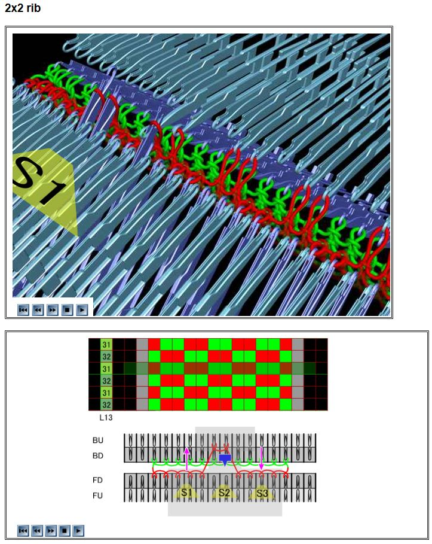
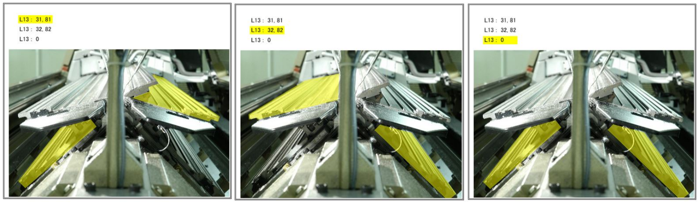
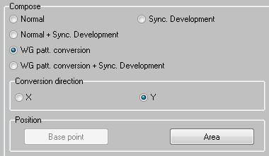
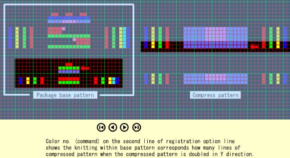

“X-bed” refers to a four needle bed flat knitting machine configuration.
”V-bed” refers to a two needle bed configuration. In reality, the two needle beds are in an inverted V-shape configuration (Ʌ).
In a similar way, for an X-bed configuration, the four needle beds are not in an X-shape configuration. Instead, the configuration is more like two inverted V’s stacked on top of each other (/Ʌ\).
The four needle beds are:
- Front lower (FD - front down)
- Front upper (FU - that’s what Shima Seiki calls it)
- Back lower (BD - back down)
- Back upper (BU)
The X-bed configuration allows you to knit full gauge knit structures that require both front and back needle beds (e.g., tubular structures, double-layer fabrics) AND transfers (e.g., inside shaping, knit structures that require back knits on the front bed/front knits on the back bed). This is because the empty upper needle beds can be used to transfer loops. Most Wholegarment patterns are knitted as tubes, which is what makes the X-bed configuration helpful.

Images showing how a 2x2 rib tube uses the BU needle bed to do back knits for the front face.
Source: SDS-ONE KnitPaint > Help > Lecture Help > 6. Basic Knitting of WG > 2x2 Rib.
Topologically 1, any knit structure that can be knitted on an X-bed machine can be knitted on a V-bed machine, although it may require half gauge or 1x1 knitting so that there are empty needles to handle transfers and links-links knit structures without disrupting the tube structure.
Needle bed limitations
- Needle beds cannot do all-needle knitting.
- Upper needle beds cannot do tucks.
- If a loop is held on the upper needle bed, knitting cannot take place on the lower needle bed directly below the loop.
- E.g., if a loop is held on BU needle 10, the loop will block BD needle 10 from being used.
These limitations apply to the MACH2X and MACH2XS machines that I have used. I am not sure if they apply to newer machines (e.g., SWG-XR).
Transfer rules
Loops can be transferred between the following needle beds:
- FD and BD (front lower, back lower).
- FD and BU (front lower, back upper).
- BD and FU (back lower, front upper).
Loops cannot be transferred between the following needle beds:
- FU and BU (front upper, back upper).
- FD and FU (front lower, front upper).
- BD and BU (back lower, back upper).

Side view of the four needle beds, with yellow highlights showing the permissible transfers between needle beds.
Source: SDS-ONE KnitPaint > Help > Lecture Help > 4. Action of Each Part on Machine > Four Needle Beds.
Option lines
More information on each option line can be found in KnitPaint > Help > Automatic Software Help.
L13
Option line L13 is used to specify which needle beds are used for knitting. Using the wrong specifications on L13 will probably lead to unexpected outcomes, e.g., knitting a flat panel instead of a tube.
Most common L13 specifications:
- = 0: Use FD and BD.
- = 81: Use FD and BU (compulsive transfer).
- = 82: Use BD and FU (compulsive transfer).
- = 31: Use FD and BU.
- = 32: Use BD and FU.
L13= 0 is used when you want to knit using only the lower needle beds, e.g., when knitting an interlock fabric.
L13= 81 and = 82 are used when you want to knit a double-layer structure that needs inside shaping or back knits on the front face (and vice versa).
For example, if you want to knit a tube with rib knit structure, use = 81 to knit the front face and = 82 to knit the back face. = 81 will knit the front knits on FD and the back knits on BU, then the back knits will be transferred from BU to FD. = 82 will knit the back knits on BD and the front knits on FU, then the front knits will be transferred from FU to BD. = 81/ 82 have ‘compulsive transfer’, which means that auto-transfer will be performed with carriage systems S1 and S3.
L13= 31/ 32 are similar to = 81/ 82, but = 31/ 32 will not perform auto-transfer with S1/S3 when = 31/ 32 are placed continuously. This reduces the number of transfers and may reduce the chance of loops dropping or otherwise malfunctioning during transfers.
Refer to SDS-ONE KnitPaint > Help > Automatic Software Help > MACH2X/MACH2XS > 2. Option Line > L13: Used Bed for more details.
R9
Sometimes, you need to explicitly tell KnitPaint to not do auto transfers or links process to ensure that your knit structure is knitted as intended.
Most common R9 specifications:
- = 1: Links process ignore.
- = 11: (When selecting WG) S1 and S3; auto-transfer process ignore..
Refer to SDS-ONE KnitPaint > Help > Automatic Software Help > MACH2X/MACH2XS > 2. Option Line > R9: Links Process Ignore for more details.
R5
If you want to do transfers using 20/ 29/ 30/ 39 without knitting, you can also use the following R5 option line settings together with knit + transfer color numbers:
- = 30: Knit cancel, use FD and BD for transfers.
- = 31: Knit cancel, use FD and BU for transfers.
- = 32: Knit cancel, use BD and FU for transers.
Admittedly, I have not used this before. I always use R5= 1 together with L13 to specify which needle beds to use for transfers.
Refer to SDS-ONE KnitPaint > Help > Automatic Software Help > MACH2X/MACH2XS > 2. Option Line > R5: Knit Cancel for more details.
Knit out of commanded bed
If you have a course in your package base pattern that needs to use three needle beds, use the following ‘out of commanded bed’ (OoCB) color numbers in the structure area, along with L13.
- 114: Front knit (out of commanded bed) (without links process).
- 115: Back knit (out of commanded bed) (without links process).
For example, if you want to knit using FD, BU, and BD, use L13= 81 to specify that FD and BU should be used. But where you need to knit on BD, use 115 to specify a back knit out of the commanded bed. I.e., the L13 command is to use BU, but 115 uses BD instead.
Sometimes, Shima Seiki patterns use L13= 81/ 82 and 1/ 2/ 114/ 115 to knit interlock, instead of using L13= 0 and 51/ 52.
Refer to SDS-ONE KnitPaint > Help > Automatic Software Help > MACH2X/MACH2XS > 1. Color No. List for more details.
Package development
Since tubular fabrics require a course on the back needle bed and a course on the front needle bed to form 1 complete round, a tubular fabric that is 100 courses tall in real life will require a developed pattern that is 200 courses tall (100 courses on the back bed, 100 courses on the front bed). If you prefer to draw compressed patterns that are the same ‘height’ as the fabric will be in real life, in the Package Development dialog box, select:
- Normal tab
- Compose section: WG patt. conversion
- Conversion direction: Y

Normal tab of Package Development dialog.
Source: SDS-ONE KnitPaint.
If this is selected, during package development, every line of the compressed pattern will be duplicated so that the compressed pattern becomes twice as tall before replacing the compressed pattern with the package base patterns. But this means that registration option line 2 2 needs to specify twice the the number of lines too, so that the package base patterns are correctly inserted into the compressed pattern.

Example showing how the compressed pattern is doubled in height, and therefore registration option line 2 must match the doubled compressed pattern.
Source: SDS-One KnitPaint > Help > KnitPaint Help > 2. Registration Option Line (Paint).
Specifying WG patt. conversion (Y) also allows you to use the Package Development > Normal tab > Position section > Area tool to select separate compressed patterns for the front body and back body (see Front Body Back Body for more details).
Are you confused yet?
Footnotes
-
“Topologically” is used in the sense of, considering only the invariant spatial relationships, and not the geometry or dimensions. ↩
-
Registration option line 2 specifies the number of lines in the compressed pattern that correspond with the package base pattern. For example, if registration option line 2 = 2, 2 lines in the compressed pattern will be replaced with all the lines in the package base pattern to form the developed pattern. If WG patt. conversion (Y) is selected, the number of lines in the compressed pattern are counted after doubling the compressed pattern. Refer to SDS-One KnitPaint > Help > KnitPaint Help > 2. Registration Option Line (Paint) for more details. ↩